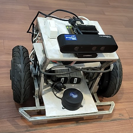

My Robotics projects
AGMR, SLAM, Sensor fusion, Kalman Filter, AMCL, BLDC motor, Web server, ROS2, C++, Python, Vue.js, Solidworks
AI Autonomous Mobile platform
Private company - Busan, South Korea
2023~2024
limited information due to non-disclosure agreement

Update of previous robotic platform with the implementation of embedded web server, battery level monitoring, LEDs signage, extra proximity sensors and more reliable navigation.
I was still the team leader and the designer of the project.
I worked on the navigation part, mechanical part and build of the robot as well as the Webserver Front end part and helping for back end
part.
My 2 developers worked on updating the ROS part and improved the reliability of the robot and webserver as well as
helping 3 interns on the computer vision part.
Keywords:
C++, Python, ROS2, Vuejs, LiDAR SLAM, Visual SLAM, 3D design, Solidworks, R.Pi5, R.Pi Zero, Arduino Nano, RGB camera, Project manager, Notion
Development of Autonomous Mobile robot platform
Private company - Busan, South Korea
2022~2023
limited information due to non-disclosure agreement

Update of previous robotic platform with the implementation of embedded web server, battery level monitoring,
LEDs signage, extra proximity sensors and more reliable navigation.
Keywords:
dsdsd
3D prototype creation for robotic partial mastectomy surgery
TegnyTech - for Yonsei Cancer Hospital
2019~2020 & 2021
limited information due to patent in progress (own by Yonsei)

Design of a prototype of surgical tool for robotic mastectomy with Yonsei Surgeon and Professor and creation of a 3D model in order
to apply for a device patent
Keywords:
Mechatronics, Robotic surgical tool, Masectomy, Prototyping, 3D Model, Professor design meeting